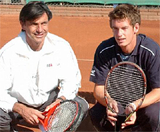
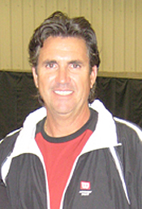
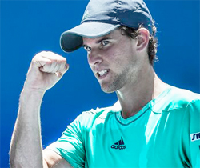

Previous: How to Incorporate the Approach | 🏠 Classic Lessons Home | Next: Is it the Overhead – Or the In Front of Head
Invisible Greatness
Comprehensive unified tennis knowledge base — Fundamentals, Stroke Analysis, Reference Library, and more
Invisible Greatness
Nate Chura

Joanne Russell believed in invisible will.
At a birthday party for Steffi Graf's long-time coach Pavel Slozil I asked my friends JoAnne Russell and Mary Carillo for their input about what separates one obviously gifted tennis player from another.
Why do players inexplicably miss routine shots? Why do "talented players" lose to "less talented players." I was beginning an inquiry to discover the invisible factors that made tennis players great.
Carillio noted that when she watched players like Jo-Wilfred Tsonga or Gael Monfils she wondered the same thing. Truly there was a mystery about it. She noted that some players like Andre Agassi just needed a blueprint, strokes, patterns, but for others that was not enough.
Russell said the difference was determination, passion, and desire. Coming up in tennis she was driven to prove she would succeed when others doubted her ability. Here was the first of a number of invisible factors I would uncover--will.
Imagine two players playing a match. What can you see or measure? The court, the racquet, the ball, footwork, strokes, the conditions. But then you get to the moment when one player either makes a winning shot or misses it. This is where greatness starts to become a blur.
Why did Player A miss the shot? It's easy to point out he or she was out of position or attempted a low-percentage shot, or their shot was too weak and short, and so on, but is that really why the player missed it?
How tight or loose was the player gripping the handle? How fast was she really swinging? Was the player tinkering with his or her swing technique when they struck a particular ball?
What were they thinking the moment they set up the shot? Where were they aiming? The list goes on.
25 Points

Emilio helped a young Andy Murray develop a way to win 25 points.
I had an illuminating discussion about this with Emilio Sanchez at his academy in Naples, Florida. Emilio reached a career-high of number 7 in the world singles and number in 1 doubles. He helped Andy Murray, Svetlana Kuznetsova, Grigor Dimitrov, and numerous others transition from juniors to pros.
His theory was fascinating. A player needed to have a single shot, or a strategic play, that netted at least of 25 points per set--the least number of points you need to win a set, plus one.
"You need a forehand," says Sanchez, "or serve or volley, something so at least if you are not so aggressive to make a winner, you are aggressive enough to open the court that will give you the twenty-five to thirty points you need."
According to Emilio, another invisible tool was a player's ability to apply their shot or play under numerous circumstances. "Depending on who you play, the pattern from the other player and how they make their twenty-five points," he says, "how the other player compensates - the equation can be different. People with the same patterns, with the same twenty-five points, depending on the surface, the outcome can change. Because with one player you will be able to do the pattern, earn the twenty-five points; against another, maybe on a faster surface, you may not be able to do it."
"The most difficult thing to be able to do is to do your thing on the court," says Sanchez, "to make those points. You start by learning where you play your ball, where your opponent is going to hit it, to be able to anticipate the ball."

Brett believes anticipation and decision making are key invisible qualities.
Anticipation
Veteran coach and founder of Modern Tennis LLC, Brett Hobden agrees about anticipation. He says two of the most important invisible skills in the game are anticipation and decision-making. (Click Here to read Brett's article on the 7 Topspin Forehands.)
"There are certain ingredients that go into the success or failure of a shot," Hobden told me, "and I think it starts with anticipation. What do you see and what does that information mean to you? That's an invisible quality, right? Then there's decision-making, what you do with that information."
In Brett's opinion, anticipation and decision-making do not fall into the "technical" basket. They are baskets of their own. They occur before the split step and subsequent movement to the ball, spacing, swing path, recovery, and so on.
"A player may execute unbelievably," Hobden says, "but choose the wrong shot often. So it's not an execution issue, it's a shot choice issue. A player may, say, arrive late at a ball that is short, but it's not their speed of movement; they're quick, but they anticipate late that they arrive late."
Another connected category Brett highlighted is a player's ability to process feedback. Successful players learn from their mistakes, weaknesses, and from coaches, but that all begins with getting the right information.
How do you win your 25 points a set?
"If a player cannot determine what really went wrong," says Hobden, "they often repeat the same errors in a seemingly never-ending cycle. They have to understand the real cause of the problem."
Invisible Mental
Still another invisible aspect of tennis that is acknowledged by most players is the mental game, yet very few actually know what this means. Certainly, anyone who has played a match of any significance can attest to feeling nerves or having mental lapses of judgment, but how and why this occurs remains a mystery to most players.
The mental game is invisible - invisible to your parents, to your coach, to the spectators, and often to the players themselves. Though we sometimes get a clue as to what a player might be thinking or feeling, the fact is we never know for sure. And he may not either.
The mental game overlaps with the other invisible aspects of the game. If a very skilled player plays a substantially unskilled player, the chances are the skilled player will win, despite mental weakness, because the technical or physical games are so drastically mismatched. But if one skilled player who wins 25 points with his tools plays another skilled player who also wins 25 points with his tools, then the outcome hinges on the remaining few points, which puts substantial stress on the players. And here the invisible mental game is often the deciding factor.

When do you want to pump up?
"Those few points are very, very important," Sanchez points out. "The difference between the great players and the not-so-great players is that they are able to handle adversity, difficulties, emotion in a better way to be able to do what they want to do. The other players get more jeopardized by the situation, by the adversity."
How do the best players succeed where the rest of us fail? The sage Dr. Allen Fox told me the secret is two-fold: stress management and emotional discipline.
"When winning is in doubt, it's stressful," says Fox. "A lot of people say they don't care if they win. Everybody cares if they win. We're a social species, like wolves or chimpanzees, and all social species have hierarchies. Some individuals are ranked higher than others. And everybody wants to be ranked high.
"Ranking is very important. Everybody knows when you have a good job, when you have a nice car. When you dress well.
"All those are ranking issues, and so a tennis match is a fight for ranking. It's an emotional game. One of the two contestants is going to end up on top of the other one. And when you lose, and you're really trying to win, you feel diminished. You know your opponent has bested you. You're inferior to this person, at least on a tennis court. It doesn't feel good. So that's where the stress comes from."

You can't run out the clock like Steff.
Human beings are not designed to tolerate high levels of stress for very long periods. And what is a tennis match, but one prolonged stressful experience?
Just consider the scoring system. Most players are completely oblivious to its diabolical nature and how it affects them time and time again.
"Conceptually, tennis scoring presents us with an increasingly important and stressful series of individual battles, the outcome of which is all or nothing, win or lose," wrote Fox in “Tennis: Winning the Mental Match”.
"Unlike football or basketball where you can build up a big lead and simply run out the clock, in tennis you have to do the dirty work of affirmatively finishing off your opponent. Stress grows in each little battle as you near the finish.
"Winning game point is more stressful than winning the deuce point, winning the deuce point is more stressful than winning the 15-all point, and so forth. Similarly, winning the 4-all game is more stressful than winning the 2-all game, and winning the game that gives you the set is more stressful still. Set point is the most stressful point in the set and match point is the most stressful point in the match."

The closer to the win, the more stress.
Fox explained to me that most players are not capable of dealing with this stress and so unconsciously escape from it as soon as possible through a few common emotional responses: anger, excuse-making, and tanking. A classic example is when a player gets ahead in a match - maybe they're serving for the set - then suddenly "chokes" it away.
"The hidden fact," he says, "is that these players subconsciously want to avoid the growing stress of finishing. They have what appears to be a substantial lead, so they delude themselves into feeling they can safely put off this bit of nasty work. They want to delay - unconsciously, of course - the increasing mental effort required to win and they end up getting beaten."
The best players find creative ways of decreasing their stress before and throughout the match to prevent destructive emotional escape responses. They also practice strict emotional discipline. Though we may see Rafael Nadal pump his fist and yell, "Vamos!" or Maria Sharapova shout, "Come on!" Fox says timing is everything.
"They tend to do it in a tie-breaker," he says "or right at the end of a set. They won't do it so much early on because it's a long haul, and if you go up and down throughout the set, you'd get pretty beaten up by the end of it. In general, it doesn't pay to get too up or too down point by point."
Don't get too up and down - try not to feel at the end of a point.
"The best tip I could ever give anybody," says Fox, "is don't have any feeling at the end of a point, because the emotions that you have at the end of a point will be: you hit a great shot, you feel good. You hit a bad one, you feel bad.
"You're gonna go up and down every other point. The fact is you're gonna lose every other point against a good player. So, you've gotta keep an even keel.
The way you start out doing that is by not having any feeling at the end of a point. It's over. Nothing happened. No emotion. No excitement. Nothing negative. Just get yourself up for the next point."
Point patterns, anticipation, decision making, the mental game. I was beginning to understand why greatness was indeed invisible. Stay tuned for part 2 and the pursuit of more invisible greatness.

Nate Chura is a New York tennis pro, writer, and speaker. He is the director of tennis at Onteora Club and head tennis professional at The Heights Casino in Brooklyn, NY. He is a graduate of Emerson College in Boston, MA, a USPTA Elite certified tennis coach, and certified Dartfish technician. His first novel, The Man in the Barn: Digging Up Lincoln's Killer, was released on the 150th anniversary of John Wilkes Booth's death.
Source: tennisplayer.net archive — Invisible Greatness.docx (John Yandell teaching library, 2002-2022). Extracted and rendered as HTML for Tennis Future Lab.